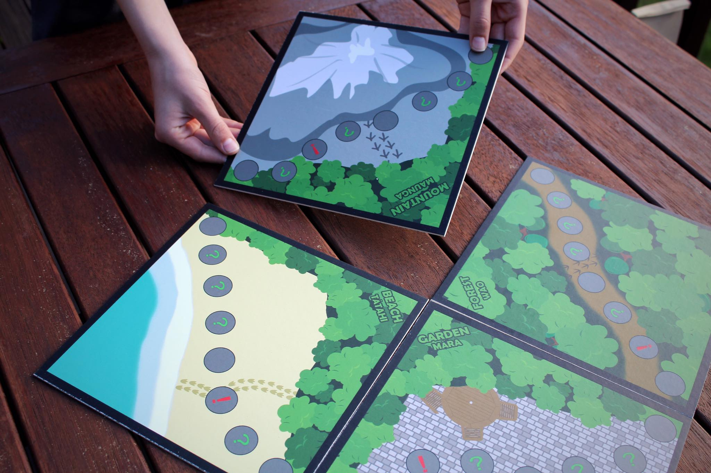
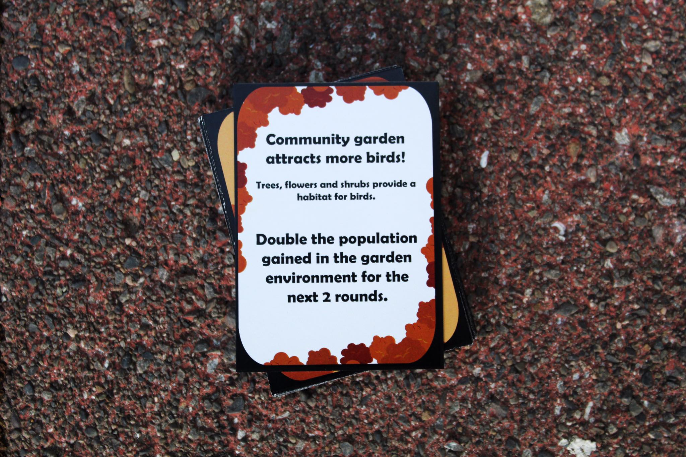
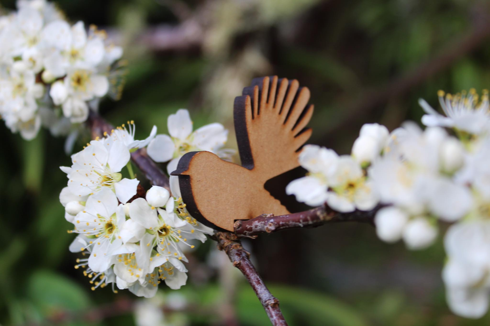
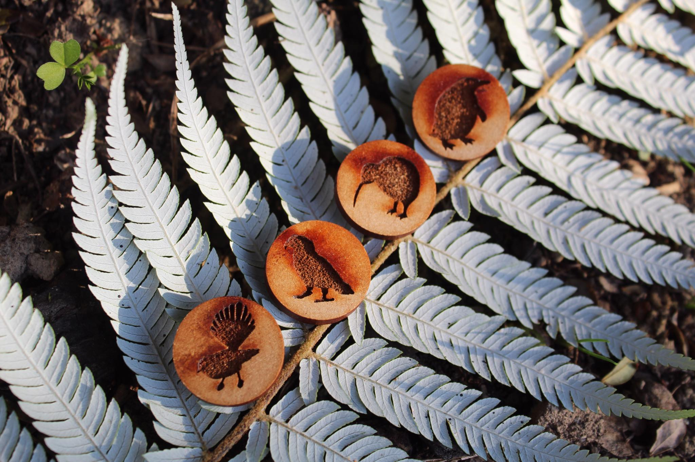
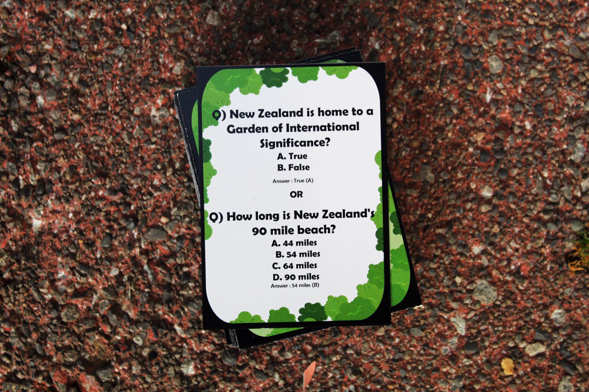
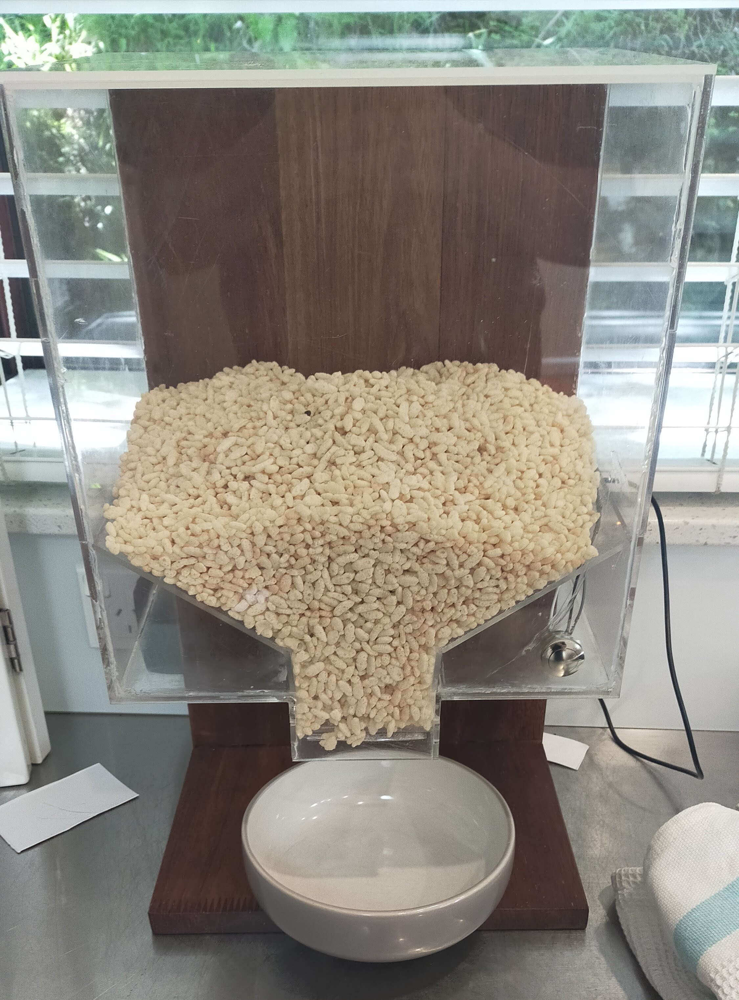
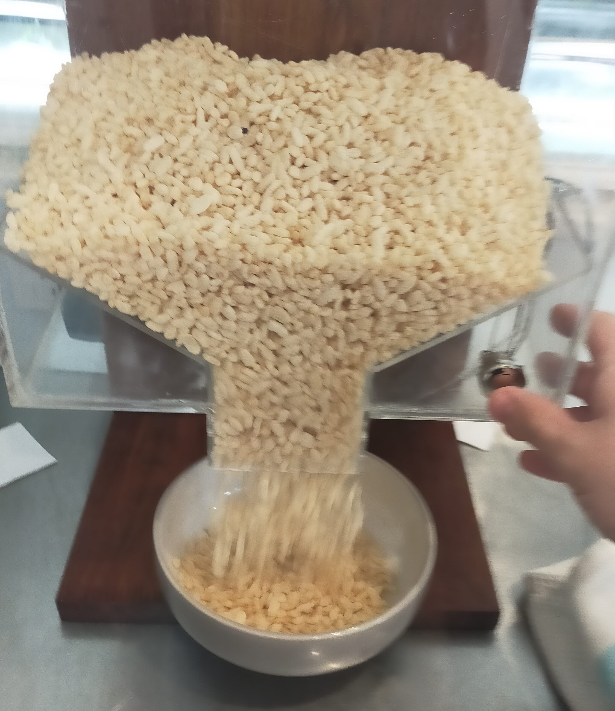
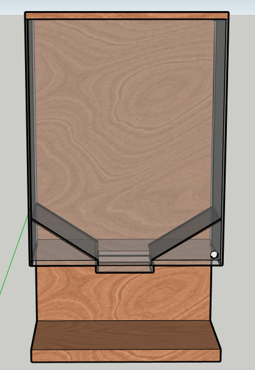

Footprints is a game that I was part of making in year 13 business studies. For the game I did the designs for the board cards and pieces using photoshop and then using a laser cutter to cut out pieces. This was part of the Young Enterprise Scheme and from this game, my group won the innovation award for the hutt valley.
    As part of the level 2 design technology course I had a brief to design and make a mini motorbike. I made an electric bike. Through the process I gained an understanding on the process of designing something like this and then also learned how to manufacture something like this out of steel using a variety of tools.
As part of level 3 design technology I designed and manufactured a cereal dispenser. for this project I went through the process of designing the complete prototype from concepts to the final project and using CAD to help with this process. While manufacturing this project I learned how to use a laser cutter and the software needed for it, how to use and program an Arduino and furthered my skills in woodworking.s
  